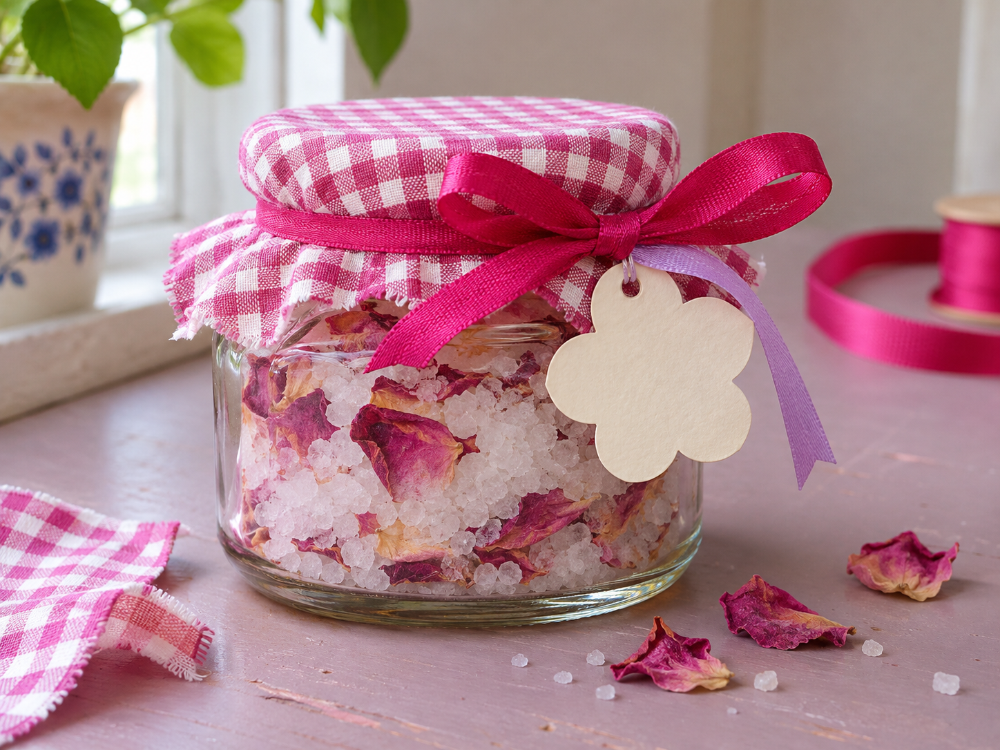
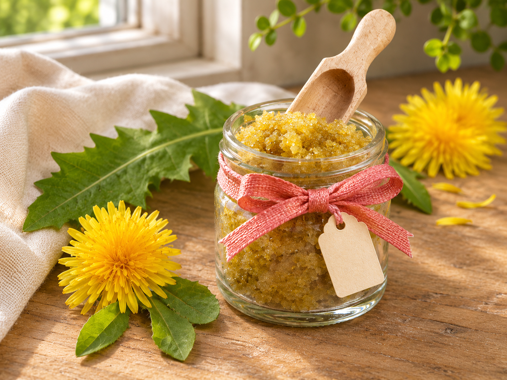

Badesalt med rosenblade
Forvandl salt og tørrede rosenblade til en lille hjemmelavet gave til et fodbad.
Idéer til personlige gaver med planter, naturmaterialer og ting, du allerede har.

Forvandl salt og tørrede rosenblade til en lille hjemmelavet gave til et fodbad.

Giv tørrede blomster og citrusskaller nyt liv som en duftende gave i et genbrugsglas.
Se hvordan du gør
Kom din hjemmelavede scrub i et rent genbrugsglas, og pynt med et bånd og en personlig hilsen.

Bland salt med tørrede krydderurter, og giv det i et lille genbrugsglas.

Brug appelsiner og vodkaen fra barskabet til en hjemmelavet gave.

Fold små poser af brugt papir, og giv frø fra dine yndlingsblomster videre.